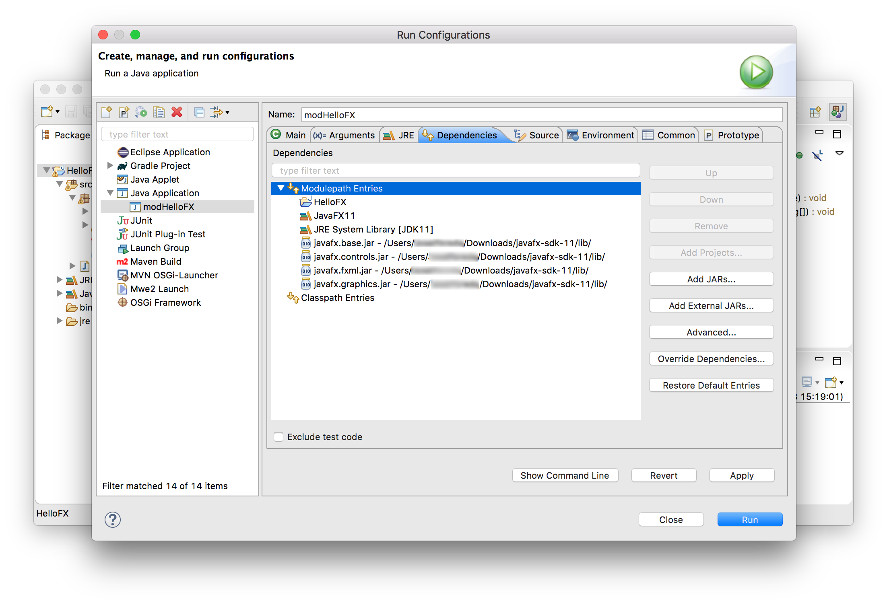
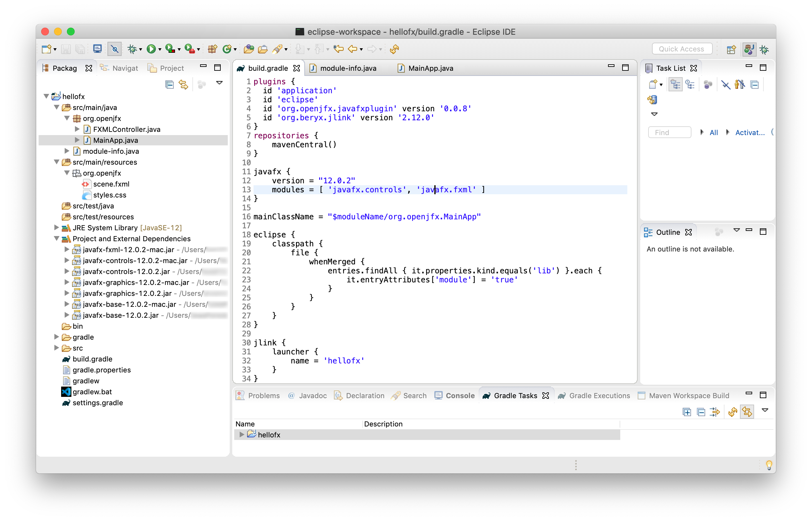
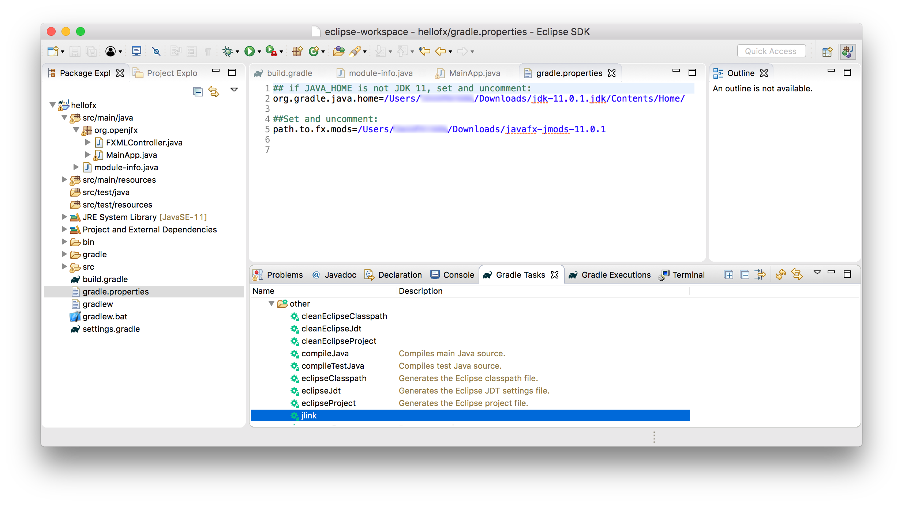

Name it JavaFX11 and include the jars under the lib folder from JavaFX 11.
Name it JavaFX11 and include the jars under the lib folder from JavaFX 11.

This section explains how to use Java 11 and JavaFX 11 from Eclipse. Version Eclipse 2018-09 (4.9) Build id: I20180906-0745 was used for the following screenshots.
Download an appropriate JDK 11 for your operating system. Make sure JAVA_HOME is properly set to the Java 11 installation directory.
Include the new JDK as Installed JREs in Eclipse -> Preferences -> Java -> Installed JREs -> Add.
You selected a JRE that this version of Eclipse JDT does not yet support fully. Some of the features may not work as expected.
You can create a JavaFX 11 modular or non-modular project and use the IDE tools, Maven or Gradle build tools.
Follow these steps to create a JavaFX non-modular project and use the IDE tools to build it and run it. Alternatively, you can download a similar project from here.
Download the appropriate JavaFX SDK for your operating system and unzip it to a desired location, for instance /Users/your-user/Downloads/javafx-sdk-11.
Create a new User Library under Eclipse -> Window -> Preferences -> Java -> Build Path -> User Libraries -> New.
Name it JavaFX11 and include the jars under the lib folder from JavaFX 11.
 Provide a name to the project, like HelloFX, and a location. Make sure JDK 11 is selected.
You don't need to add a module-info.java file. You can include the JavaFX11 library.
Provide a name to the project, like HelloFX, and a location. Make sure JDK 11 is selected.
You don't need to add a module-info.java file. You can include the JavaFX11 library.
 An empty project will be opened.
An empty project will be opened.
You can add a main class Main, based on this one,
with an FXML file and
a controllercontroller.

Error: JavaFX runtime components are missing, and are required to run this application
To solve the issue, click on Run -> Run Configurations... -> Java Application, create a new launch configuration for your project named `hellofx` and add these VM arguments:
--module-path $PATH_TO_FX --add-modules=javafx.controls,javafx.fxml
--module-path %PATH_TO_FX% --add-modules=javafx.controls,javafx.fxml
Use the -XstartOnFirstThread argument when launching with SWT
 Click apply and close the dialog.
Click apply and close the dialog.
Click Run -> Run As -> Java Application -> Main - hellofx to run the project.
You can replace the module path with the environment variable PATH_TO_FX if you add the path to
Eclipse -> Preferences -> Run/Debug -> String Substitution -> New....
 This will let you use ${PATH_TO_FX} as vm argument:
This will let you use ${PATH_TO_FX} as vm argument:
 And you can distribute the project or reuse it in other projects too.
And you can distribute the project or reuse it in other projects too.
If you use the e(fx)clipse plugin,
make sure you are running at least the version 3.4.1 that can be installed using this
URL.
 Note that you will have to do exactly the same as in the regular Java project above, including the JavaFX11 library
and adding the necessary VM arguments.
Note that you will have to do exactly the same as in the regular Java project above, including the JavaFX11 library
and adding the necessary VM arguments.
Follow these steps to create a JavaFX non-modular project and use the Maven tools to build it and run it. Alternatively, you can download a similar project from here. Make sure you have the Maven Integration for Eclipse m2e plugin installed. It can be installed from the Eclipse Marketplace otherwise.
Create a Maven project. Provide the location. You can skip the archetype, or select for instance the
maven-archetype-quickstart one.
 Provide the groupId, like org.openjfx, the artifactId, like hellofx.
When the project opens, select the JDK 11 for the project (File -> Properties -> Java Build Path -> Libraries).
Provide the groupId, like org.openjfx, the artifactId, like hellofx.
When the project opens, select the JDK 11 for the project (File -> Properties -> Java Build Path -> Libraries).

Before adding the JavaFX classes, edit the pom file and use the dependencies and plugins from
this pom file, and set the
mainClass accordingly to org.openjfx.hellofx.MainApp.
Refresh the POM. The JavaFX jars will be downloaded. Maven manages the required dependencies:
it will add javafx.base and javafx.graphics that are required by
javafx.controls and javafx.fxml,
but most important, it will add the required classifier based on your platform, downloading
the specific platform jars.
 As for any other maven dependencies, these jars can be found in the local .m2 repository.
As for any other maven dependencies, these jars can be found in the local .m2 repository.
Based on this MainApp class,
add its content to the project main class. Then add the controller
and the FXML and
and the css
files.

Click Run -> Run As -> Maven Build -> New launch configuration to create a new configuration. Name it hellofx, and add the required goals:
clean compile exec:java
 Run the project Run -> Run As -> Maven Build -> hellofx -> Run.
You can also open a terminal and run mvn compile exec:java to run the project.
Run the project Run -> Run As -> Maven Build -> hellofx -> Run.
You can also open a terminal and run mvn compile exec:java to run the project.
Exception in thread "WindowsNativeRunloopThread" java.lang.NoSuchMethodError: <init>
at javafx.graphics/com.sun.glass.ui.win.WinApplication.staticScreen_getScreens(Native Method)
at javafx.graphics/com.sun.glass.ui.Screen.initScreens(Screen.java:412)
...
Exception in thread "JavaFX Application Thread" java.lang.NullPointerException
at javafx.graphics/com.sun.prism.d3d.D3DPipeline.getAdapterOrdinal(D3DPipeline.java:205)
at javafx.graphics/com.sun.javafx.tk.quantum.QuantumToolkit.assignScreensAdapters(QuantumToolkit.java:695)
at javafx.graphics/com.sun.javafx.tk.quantum.QuantumToolkit.runToolkit(QuantumToolkit.java:313)
...
-Djava.library.path=C:\tmp
Follow these steps to create a JavaFX project and use the Gradle tools to build it and run it. Alternatively, you can download a similar project from here. Make sure you have the Buildship Gradle Integration 2.0 plugin installed. It can be installed from the Eclipse Marketplace otherwise. Update to 2.2.3 version from this URL.
Create a Gradle project with Java.
 Provide a name to the project, like HelloFX and a location for the project.
Provide a name to the project, like HelloFX and a location for the project.

Edit the build.gradle file and replace it with this build file, setting the mainClassName accordingly to org.openjfx.MainApp.
Similar to Maven, we can declare the required JavaFX modules in the build.gradle file. However, for Gradle we need to specify the JavaFX gradle plugin:
javafx {
modules = [ 'javafx.controls', 'javafx.fxml' ]
}
Refresh the gradle project and you will get the JavaFX dependencies.
 As for any other Gradle dependencies, these jars can be found in the local .gradle repository.
As for any other Gradle dependencies, these jars can be found in the local .gradle repository.
Based on this MainApp class, add its content to the project main class. Then add the controller and the FXML and and the css files.
You can add a main class MainApp, and an FXMLController class, and add to resources the FXML file.
You can open the Gradle Task window and click on build -> build to
build the project, and application -> run to run the project.
 You can also click on Run -> Run configurations... -> Gradle Project -> hellofx to add a run task to the project.
You can also click on Run -> Run configurations... -> Gradle Project -> hellofx to add a run task to the project.

You can also open a terminal and run:
./gradlew run
gradlew run
Exception in thread "WindowsNativeRunloopThread" java.lang.NoSuchMethodError: <init>
at javafx.graphics/com.sun.glass.ui.win.WinApplication.staticScreen_getScreens(Native Method)
at javafx.graphics/com.sun.glass.ui.Screen.initScreens(Screen.java:412)
...
Exception in thread "JavaFX Application Thread" java.lang.NullPointerException
at javafx.graphics/com.sun.prism.d3d.D3DPipeline.getAdapterOrdinal(D3DPipeline.java:205)
at javafx.graphics/com.sun.javafx.tk.quantum.QuantumToolkit.assignScreensAdapters(QuantumToolkit.java:695)
at javafx.graphics/com.sun.javafx.tk.quantum.QuantumToolkit.runToolkit(QuantumToolkit.java:313)
...
run {
if (System.getProperty("os.name").startsWith("Windows")) {
systemProperty "java.library.path", "C:\tmp"
}
}
Download the appropriate JavaFX jmods for your operating system and unzip it to a desired location, for instance /Users/your-user/Downloads/javafx-jmods-11.
Follow these steps to create a JavaFX modular project and use the IDE tools to build it and run it. Alternatively, you can download a similar project from here.
Provide a name to the project, like HelloFX, and a location. Make sure JDK 11 is selected. Make sure you have selected the option to create a module-info.java file. You can select the output folder as HelloFX/bin/hellofx. You can include the JavaFX11 library. An empty project will be opened.
Edit the module-info class, and including the required modules javafx.controls and javafx.fxml. Since FXML uses reflection to access the controller in the module, this has to be opened to javafx.fxml. Finally, export the package org.openjfx.
The type Stage from module javafx.graphics may not be accessible to clients due to missing 'requires transitive'

Based on this MainApp class, add its content to the project main class. Then add the controller and the FXML and and the css files.
Being a modular project, and since we already added the JavaFX11 library to the module-path, there is no need to add any VM arguments.
Error occurred during initialization of boot layer
java.lang.module.FindException: Module javafx.graphics not found, required by hellofx
This issue has been fixed starting with Eclipse 2018-12 (4.10.0M2 Build id: 20181108-1653).
For older versions, this can be solved by adding the JavaFX required jars directly to the module path in Run -> Run Configurations... -> Java Application -> Dependencies. 
Click Run -> Run Configurations... -> Java Application to run the project.
To create a runtime image, run the following commands:
export PATH_TO_FX_MODS=path/to/javafx-jmods-11
$JAVA_HOME/bin/jlink --module-path $PATH_TO_FX_MODS:bin/hellofx --add-modules=hellofx --output jre
jre/bin/java -m hellofx/org.openjfx.MainApp
set PATH_TO_FX_MODS="path\to\javafx-jmods-11"
jlink --module-path "%PATH_TO_FX_MODS%;bin\hellofx" --add-modules=hellofx --output jre
jre\bin\java -m hellofx/org.openjfx.MainApp
Follow these steps to create a JavaFX modular project and use the Maven tools to build it and run it. Alternatively, you can download a similar project from here.
Provide the groupId, like org.openjfx, the artifactId, like hellofx. When the project opens, select the JDK 11 for the project (File -> Properties -> Java Build Path -> Libraries).
Before adding the JavaFX classes, edit the pom file and use the dependencies and plugins from this pom file, and set the mainClass accordingly to org.openjfx.MainApp. Refresh the POM. The JavaFX jars will be downloaded.
Add the module-info class, including the required modules javafx.controls and javafx.fxml.
Since FXML uses reflection to access the controller in the module, this has to be opened to javafx.fxml. Finally,
export the package org.openjfx.
To prevent Eclipse from showing a warning when creating the Application class, add also the transitive modules to the file:

Based on this MainApp class,
add its content to the project main class. Then add the controller
and the FXML and
and the css
files.

Click Run -> Run As -> Maven Build -> New launch configuration to create a new configuration. Name it hellofx, and add the required goals:
clean compile package exec:java
Run the project Run -> Run As -> Maven Build -> hellofx -> Run. You can also open a terminal and run mvn clean compile package exec:java to run the project.
To create a runtime image, run the following commands:
export PATH_TO_FX_MODS=path/to/javafx-jmods-11
$JAVA_HOME/bin/jlink --module-path $PATH_TO_FX_MODS:target/hellofx-1.0-SNAPSHOT.jar --add-modules=hellofx --output jre
jre/bin/java -m hellofx/org.openjfx.MainApp
set PATH_TO_FX_MODS="path\to\javafx-jmods-11"
jlink --module-path "%PATH_TO_FX_MODS%;target\hellofx-1.0-SNAPSHOT.jar" --add-modules=hellofx --output jre
jre\bin\java -m hellofx/org.openjfx.MainApp
Follow these steps to create a JavaFX modular project and use the Gradle tools to build it and run it. Alternatively, you can download a similar project from here.
Create a Gradle project with Java. Provide a name to the project, like HelloFX and a location for the project.
Edit the build.gradle file and replace it with this build file, setting the mainClassName accordingly to org.openjfx.MainApp.
Note the use of the org.openjfx.javafxplugin plugin, that removes the necessity of adding the JavaFX dependencies and setting the module-path for the compile and run task for them.
Note also that the use of the eclipse plugin is required to include the modules to the module path. 
Add the module-info class, including the required modules javafx.controls and javafx.fxml.
Since FXML uses reflection to access the controller in the module, this has to be opened to javafx.fxml. Finally,
export the package org.openjfx.
To prevent Eclipse from showing a warning when creating the Application class, add also the transitive modules to the file:

Based on this MainApp class, add its content to the project main class. Then add the controller and the FXML and and the css files.
You can open the Gradle Task window and click on build -> build to build the project, and application -> run to run the project. You can also click on Run -> Run configurations... -> Gradle Project -> hellofx to add a run task to the project.
You can also open a terminal and run:
./gradlew run
gradlew run
To create a runtime image, set the org.gradle.java.home and path.to.fx.mods properties in the local gradle.properties file.  Then run hellofx->Tasks -> other -> jlink task to create the image. To run the image:
build/hellofx/bin/java -m hellofx/org.openjfx.MainApp
build\hellofx\bin\java -m hellofx/org.openjfx.MainApp